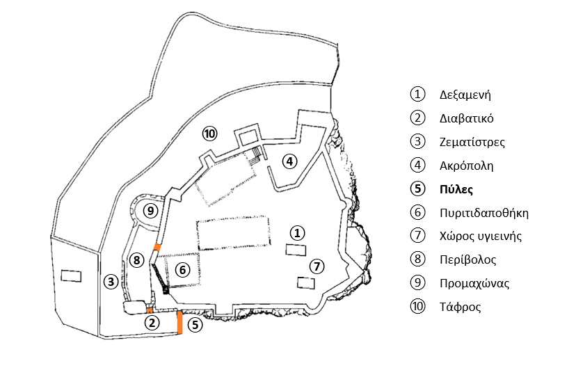
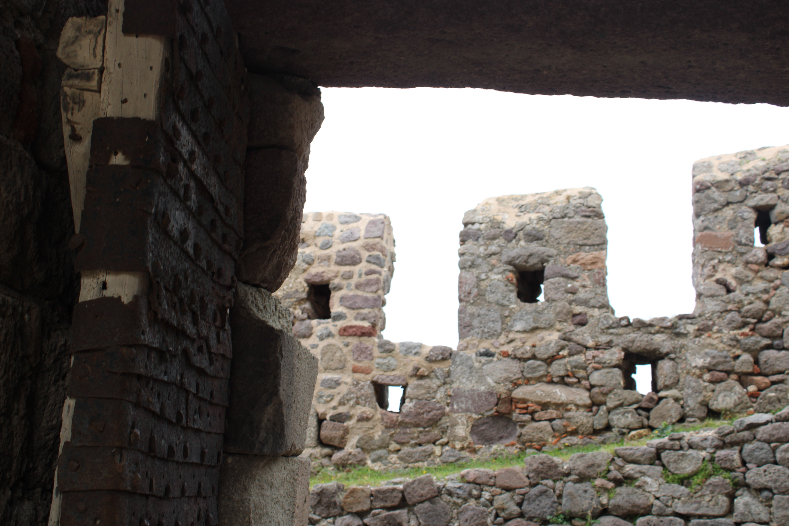

Πύλες

Πύλες - Κάτοψη

Η (εξωτερική) πύλη 1 του κάστρου.

Η πύλη 2 του κάστρου.

Η (εσωτερική) πύλη 3 του κάστρου.

Η ξύλινη, μεταλλική επένδυση της πύλης 3.
Η πρόσβαση στο κάστρο γίνεται μέσω τριών διαδοχικών πυλών. Η εξωτερική ανοίγεται στο νοτιότερο άκρο του εξωτερικού περιβόλου και χρονολογείται στην οθωμανική περίοδο με βάση την επιγραφή που φέρει και τη διαμόρφωση με οξυκόρυφο τόξο. Σε μικρή απόσταση έχουμε μια δεύτερη είσοδο με θολοσκέπαστο διαβατικό με εγκάρσιες νευρώσεις που οδηγεί σε έναν υπαίθριο χώρο ο οποίος προστατεύεται από τα τείχη. Ανεβαίνοντας το καλντερίμι βρισκόμαστε στην τρίτη κατά σειρά πύλη που αποτελεί την κύρια είσοδο του κάστρου και χρονολογείται στον 14ο αι. Ενδιαφέρουσα είναι η ξύλινη, με μεταλλική επένδυση, θύρα που κλείνει την είσοδο (οθωμανικής περιόδου).